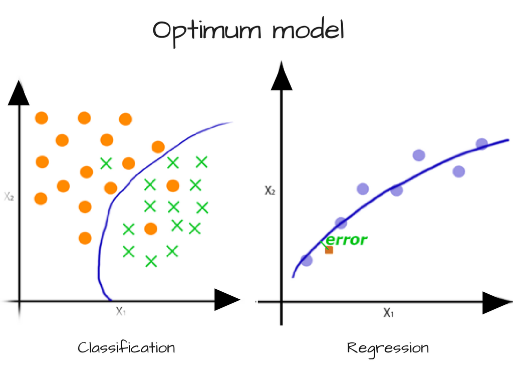

Along with A Programmer’s Introduction to Mathematics, I started reading Model Thinker: What You Need to Know to Make Data Work for You as a sort of analogous non-statistician’s introduction to statistics.
Or perhaps I should say re-introduction, since I had to take Intro to Stats in college. But I passed that class by the skin of my teeth and really developed an aversion to statistical analysis from that course. But it’s a necessary part of data science, so…
Chapter 2
Chapter 2 is about what models can do and their strength in numbers.
-
Models can take one of three approaches:
- embodiment approach (simplified but still realistic, like a geological model)
- analogy approach (abstracted from reality: Think of the situation as a…)
- alternative reality approach
-
Models must be communicable and tractable (analyzable). This means that it should be possible to translate them precisely into math, code, or some other formal language. (Most models are mathematical in nature, but this is not a must.)
-
All models are wrong in their own way, so no single model can accurately represent complex phenomena, but many, together, are useful.
-
Models are a superhero REDCAPE: Reason, explain, design, communicate, action, predict, explore.
-
Many models can be applied to the same problem (many-to-one). And with creativity, one model can also be put to many uses. For example, how many applications are there for a random walk? (What a relief to know that there is a place at the table for creativity and a non-STEM background!)
Chapter 3
Chapter 3 is about how there is a Goldilocks-esque balance to be struck with regard to the diversity of models and the accuracy of any given model.
More is better, until it’s not; more accurate is better, until it’s not.
The chapter uses some fancy-looking equations dressed up in terms that are specific to this context, but the equations are actually rooted in statistics and often have simpler, more intuitive explanations.
Diversity
-
Condorcet jury theorem: If all jury members in a case have an above-average probability of choosing the correct verdict, then each successive jury member after the first increases the probability of the whole jury choosing the correct verdict. The probability approaches 1 as you keep adding members.
-
Wisdom of the crowd: The author’s model diversity theorem is an adaptation of the wisdom of the crowd theorem, and it uses the error as we calculated in linear regression. (Actually, all of the equations in this chapter are based on a mean squared error of some sort.) The book presents it as follows:
$$ \underbrace{(\bar{M} - V)^2}_{\textrm{Many-Model Error}} = \underbrace{\sum_{i=1}^N \frac{(M_i - V)^2}{N}}_{\textrm{Average-Model Error}} - \underbrace{\textcolor{teal}{\sum_{i=1}^N} \frac{\textcolor{teal}{(M_i - \bar{M})^2}}{N}}_{\textrm{Diversity of Model Predictions}} $$
where \(M_i\) is the prediction of model \(i\), \(\bar{M}\) is the average value of all models, and \(V\) is the true value. In other words,- if you have only one model (\(M_i = \bar{M}\)), you can never decrease the discrepancy between its prediction and truth.
- Even if you have many models that make identical predictions (still \(M_i = \bar{M}\)), they will collectively misestimate truth by as much as each one misestimates truth.
- However, as the models’ predictions diverge from each other (that is, as \(\color{teal}\sum_{i=1}^N (M_i - \bar{M})^2\) increases), their collective misestimation goes on decreasing. This is similar to the Condorcet jury theorem, except in continuous rather than binary terms.
-
However, there is a diminishing rate of returns as you include more models: Accuracy seems to converge on a limit of some sort, not unlike gradient descent. Conceived in that way, you should stop adding models once the error between \(n\) models and \(n-1\) models is lower than some \(\epsilon\) threshold value.
-
Why is this the case? Diversity is a factor of the data’s dimensionality. Models using the same (or similar) subsets of salient features are liable to predict similarly.
-
There is a limit to how independent (accurate and diverse) a given group of models can be. Accuracy may suffer as a result of artificially trying to increase diversity (categorizing a list of locations by alphabetical order, for example).
Accuracy
Increasing the fit (and thus predictive accuracy) of a model by increasing its granularity (adding categories, features, etc.) can backfire after a certain point.
The rest of the chapter is a long and slightly overly complicated explanation of the what statisticians call the bias-variance tradeoff.
The relationship between bias and variance is similar to the relationship to precision and recall for binary classification. Ideal B-V are both as low as possible; ideal P-R are both as high as possible. However, they have a diametrically opposing relationship, so this is not actually feasible.
Bias
-
High bias ⟶ underfitting (model is too coarse to capture the general trend of the data).
Source for this illustration and the following ones: FreeCodeCamp
-
In the context of the chapter’s house price example, high bias is also called categorization error. This is the discrepancy between the samples in each category and the mean of that category.
-
Bias (categorization error) ↑ if your categories are bad and don’t accurately reflect any shared characteristics among the samples. This makes sense because in terms of a scatter plot, the data points in each category will be spread out randomly and have no trend. In terms of house prices, this could be like lumping real estate markets of states that begin with the same letter together.
-
Bias (categorization error) ↓ as category granularity ↑ (gets more precise)
-
Bias (categorization error) also ↓ as sample size ↑, because the law of large numbers dictates that a larger number of samples in a category will tend toward the mean of that category. This makes sense because more data points should more clearly indicate a trend for the model to follow.
Variance
-
High variance ⟶ overfitting (model is so fine that it starts to capture noise in the data, or in other words, every little variation).
-
In the context of the chapter’s house price example, high bias is also called valuation error. This is the total discrepancy between the estimated category means and the actual category means.
-
Variance (valuation error) ↓ as categories get larger, again because of the law of large numbers.
We all want what we can’t have
We want low variance and low bias: 
But decreasing variance increases bias, and decreasing bias increases variance. So good luck with that.
A more intuitive explanation of \(R^2\)
There are many ways to measure a model’s accuracy, and there is a sidebar mentioning \(R^2\), which quantifies the predictive accuracy of a regression model. However, it doesn’t explain it anywhere near as intuitively as illustration on Wikipedia:

The chapter’s definition of \(R^2\) is a pretty common one: The proportion of variance explained by the model. That’s pretty abstract.
A more intuitive explanation, based on the above illustration, is: How much better is a prediction made with your model than just taking the average of the data?
You want the total area of the blue squares (including overlaps) to be as small as possible compared to the total area of the red squares (including overlaps).
Model error decomposition theorem
The problem with a score like \(R^2\) is that it doesn’t tell you how much of the error is due to bias and how much is due to variance. I suppose that might be helpful if you know exactly how to fine-tune one or the other.
The author presents the model error decomposition theorem to solve this problem.
$$ \begin{gathered}
\textrm{Model Error} = \textrm{Categorization Error} + \textrm{Valuation Error} \\
\underbrace{\sum_{x \in \textbf X} \Big(M(x) - V(x) \Big)^2}_\textrm{Model Error} =
\underbrace{\sum_{i=1}^n \sum_{x \in S_i} \Big(V(x) - V_i \Big)^2}_\textrm{Categorization Error} +
\underbrace{\sum_{i=1}^n \Big(M_i - V_i \Big)^2}_\textrm{Valuation Error}
\end{gathered} $$
Lotta variables here.
| Variable | Meaning | Variable | Meaning |
|---|---|---|---|
| \(x\) | sample | \(S_i\) | category \(i\) |
| \(\textbf X\) | dataset | \(M_i\) | mean of model’s predictions for category \(i\) |
| \(M(x)\) | model’s predicition for sample \(x\) | \(V_i\) | mean of true values for category \(i\) |
| \(V(x)\) | true value for sample \(x\) |
Thus,
- \(\textrm{Model Error}\): sum discrepancy between model and truth for all samples
- \(\textrm{Categorization Error}\): sum discrepancy between true values in a category and true mean of that category for all categories
- \(\textrm{Valuation Error}\): sum discrepancy between predicted mean and true mean for all categories
It seems like you could do \(\sqrt{\textrm{Model Error}}\) to find a number the average amount that a prediction made with the model will be off by.
References
- Using Machine Learning to Predict the Quality of Wines, FreeCodeCamp
- Bias-variance tradeoff, Wikipedia
- Coefficient of determination, Wikipedia